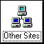
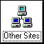

Other Webites
Technology
Kernel extensions, complaints about software, inspirational tech sites.
- Windows Vista Extended Kernel - Great project, makes Vista usable in the modern day, created by win32.
- ToastyTech - Great source of older Windows information and screenshots.
- MDGX Max Speed - Fantastic tutorials, files, and anything for 9x and NT.
- Eclectic Forums - Good source of people who know what they're doing.
- dotexe's site - Friend's site and a good example of how information should be transmitted over the web.
Development
Code samples, reverse engineered functions, great communities.
- Geoff Chappell, Software Analyst - Loads of useful information on undocumented and vague Win32 functions, especially in shellspace..
- The Internet Archive - Many infinitely useful resources from archived websites to free programming books.
- DuckDuckGo - Need to find something fast?